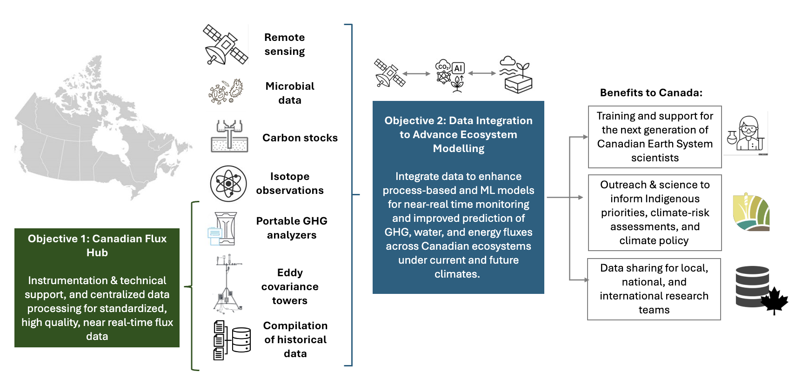
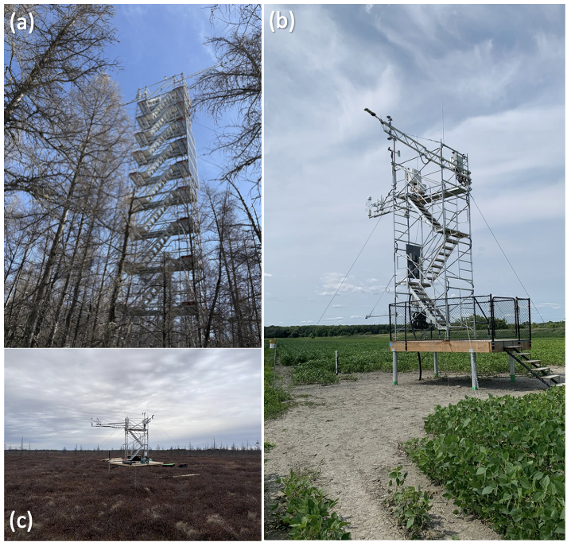

CanFlux : l’espace de données canadien sur les interactions écosystème-climat
CanFlux est un réseau national revitalisé voué à la mesure et à la compréhension des échanges de carbone, d’eau, d’énergie et autres entre les divers écosystèmes du Canada et l’atmosphère. Ces échanges complexes, aussi appelés flux, sont essentiels à la compréhension des changements climatiques, car ils contribuent à déterminer le mouvement des gaz à effet de serre (GES) comme le dioxyde de carbone(CO2), le méthane (CH4), le protoxyde d’azote (N2O), et la vapeur d’eau (H2O).
Étant donné que les écosystèmes canadiens jouent un rôle vital dans la régulation du climat [par échange du CO2, du CH4, du N2O, et de la H2O] dans les forêts naturelles et aménagées, les milieux humides, les terres cultivées, les prairies et les espaces verts urbains, il est crucial de surveiller en permanence ces changements qui ont un impact sur les cycles du carbone et de l’eau.
Mission
Traitement cohérent des données
CanFlux appliquera des approches cohérentes en matière de contrôle de la qualité, de comblement des lacunes et de répartition des flux, permettant ainsi la comparabilité entre les sites et augmentant leur valeur pour les inventaires nationaux, la validation par télédétection et la modélisation des écosystèmes.
Conservation des données à long terme
un soutien financier continu pour la conservation des données à long terme signifie que les observations essentielles sont moins vulnérables aux pertes dues à la fin des projets, aux interruptions de financement ou à la transition du personnel, ce qui réduit considérablement le risque pour la capacité nationale de surveillance du Canada.

CanFlux : bien plus que des données de flux
À long terme, nous envisageons que le réseau CanFlux intègre des données de soutien et auxiliaires pouvant être utilisées en recherche et en modélisation du carbone, en complément des données de flux. Des ensembles de données biophysiques supplémentaires sont disponibles sur l’ensemble des sites du réseau CanFlux, mais l’absence de normes de mesure et de communication en limite l’utilité. Le réseau CanFlux appuiera la normalisation et la collecte de tous les ensembles de données nécessaires aux efforts de modélisation locaux et nationaux, ce qui fera progresser la modélisation du système terrestre et la déclaration des GES, et renforcera le rôle de chef de file du Canada dans ces efforts internationaux.
Comment CanFlux peut-il nous aider ?
Les flux écosystémiques sont généralement mesurés en installant des instruments sur des « tours à flux » (Figure 1) qui suivent les GES, la température et les vents, idéalement sur des échelles de temps annuelles à décennales.

Ces données de flux observées peuvent être utilisées de nombreuses manières : pour déterminer si les écosystèmes sont des sources ou des puits de carbone, et si cela change au fil du temps ; pour estimer les concentrations de GES dans l’atmosphère ; pour répondre aux exigences gouvernementales en matière de déclaration des émissions de GES ; et pour contribuer à l’élaboration et à l’amélioration des modèles de prévision du climat futur, pour ne citer que quelques exemples importants.
Objectifs et résultats de CanFlux
CanFlux développera une plateforme de données souveraine et gérée par la communauté, intégrant les données sur les flux de gaz à effet de serre, d’eau et d’énergie aux mesures météorologiques et hydrologiques associées.
En compilant, traitant et stockant des données provenant d’au moins 148 sites de flux historiques et actifs récemment identifiés à travers le Canada.
Afficher les informations du site dans une fenêtre séparée.
CanFlux fournira les données et les outils nécessaires pour suivre les réponses des écosystèmes aux changements climatiques, améliorer les modèles prédictifs et orienter les décisions en matière d’atténuation des risques et de gestion durable.
En intégrant les mesures des tours à flux, les observations au sol (par exemple, en utilisant des méthodes de mesure alternatives pour le carbone et l’eau), la télédétection par satellite et la modélisation.
CanFlux renforcera la résilience du Canada et notre capacité à anticiper les risques liés au climat et à nous y adapter, tout en faisant progresser ses objectifs climatiques grâce à des observations environnementales ouvertes, de haute qualité et pertinentes pour les politiques.
Fondée sur la collaboration entre les scientifiques canadiens, les gouvernements fédéral et provinciaux, les partenaires autochtones, les ONG et le secteur privé.
CanFlux vise à renforcer les efforts de suivi des flux de GES et à promouvoir la gestion responsable menée par les Autochtones, les solutions climatiques fondées sur la nature, les marchés du carbone et les politiques climatiques.
Bien que le Canada possède un solide héritage en matière de mesures de flux par covariance des turbulences, la coordination nationale s’est affaiblie depuis la fin de Fluxnet-Canada en 2014. Par conséquent, des ensembles de données précieux restent sous-utilisés en raison d’une infrastructure fragmentée et d’un soutien limité à long terme.